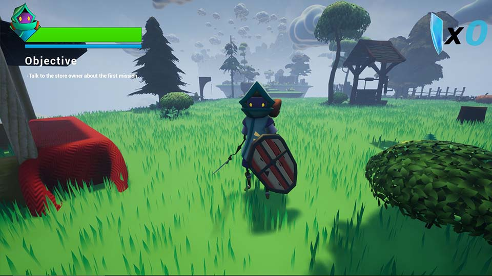
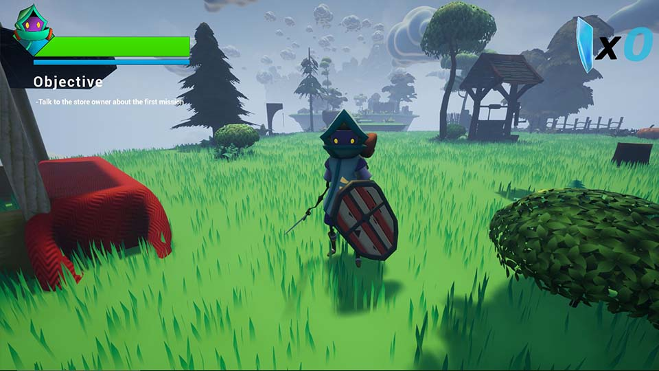
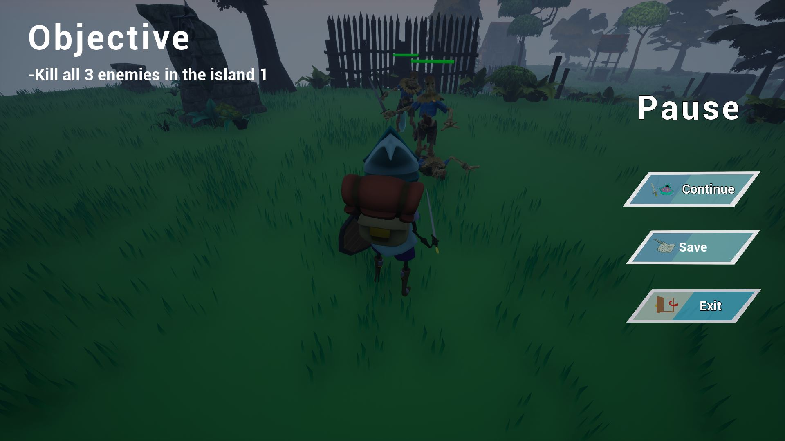
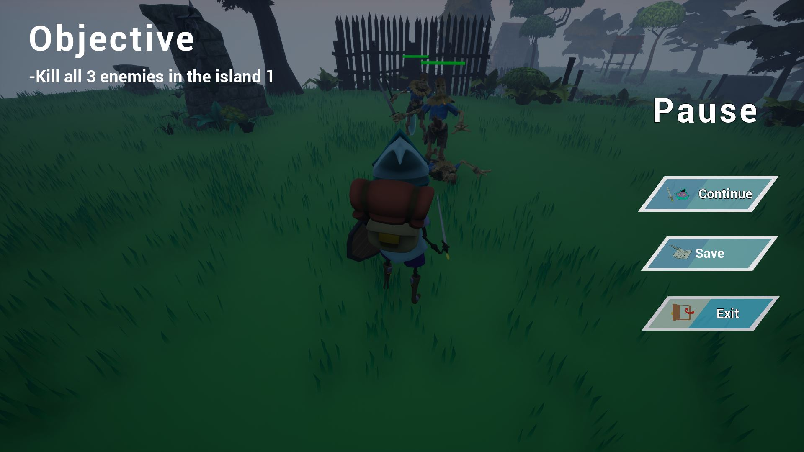

HOME
Game
Dylan Adventure The Mystery of the Forgotten Islands
 

 



Experiences
This game is one of my favorites because it was my first project working with a group. As the programmer, I learned a lot about using Unreal Engine and implementing assets from the Epic Games Marketplace into our adventure game. One of my biggest challenges was creating the enemy AI using C++, as I had never done so in any other games before. This project allowed me to improve my C++ programming skills significantly. In addition to implementing the enemy AI, I also created a shop within the game, a coin system, and programmed ambient sound and a history system. Although the game is short, I learned a lot about starting and finishing a project during the three months it took to complete. The finished game is available on itch.io.
Information
This project is an exciting adventure game that follows the journey of a young boy named Dylan, as he searches for his lost father, a former warrior called Notender. The game is set on floating islands in the sky, where a peaceful kingdom once thrived until strange creatures appeared. Notender decided to prepare for battle against these creatures, but he disappeared during the fight. Dylan takes it upon himself to find his father and uncover the truth about what happened. Most of the game was developed using C++, and the story is rich with past wars, adventures, and battles for peace.
And go to the code on Github
Category:Game
Role:Programmer
Engine:Unreal Engine 4
Language:Ue4 C++ && Ue4 Blueprint
Class:Creation of videogames prototypes
Project date:March, 2021
Project Url:Itch Link